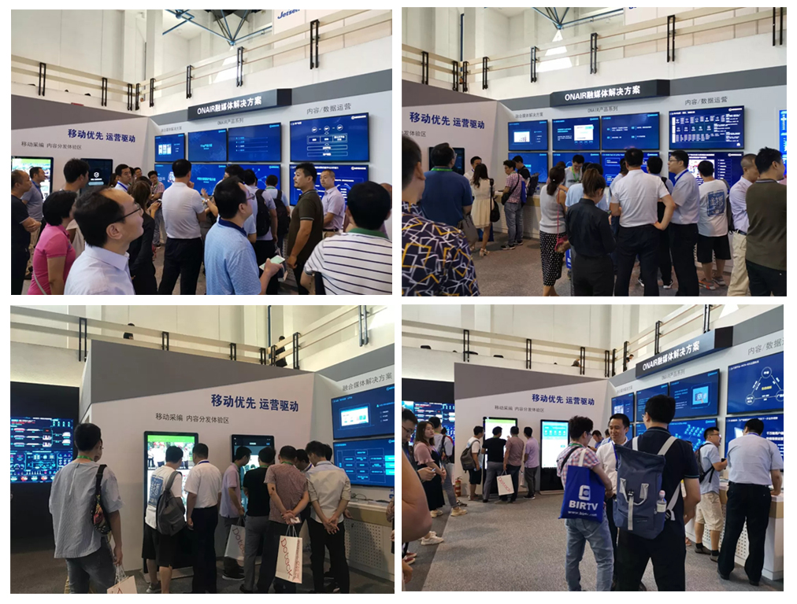
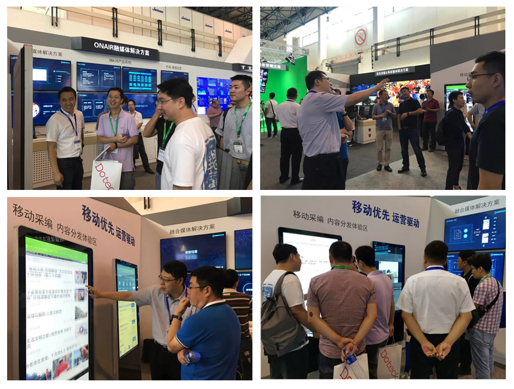

BIRTV2019 | 阳光云视：“三位一体”做好从“相加”到“相融”的全媒体服务
现在的媒体环境是什么样的？互联网的运营手段是什么？媒体行业的运营之路应该怎么走？阳光云视从全国16个省近百个县实际建设案例中总结经验，充分结合互联网基因及技术优势，形成了自己的“技术+内容+用户”运营的“三位一体”服务，全面助力融媒体发展。

8月21日，第二十八届北京国际广播电影电视展览会（BIRTV2019）顺利召开，北京阳光云视科技有限公司携ONAIR媒体云系列产品及解决方案重磅参展，与来自全国各级的媒体行业朋友们，共同探讨融媒发展之路。本次展会，阳光云视结合近年融媒体发展要求，互联网传播趋势特点，以“移动优先、运营驱动”为主题，通过现场体验及内容串联，完整的呈现出从“策-采-编-审-发”到“轻量化、移动化、敏捷化”的方案特点，并结合实际运营案例展示，取得了热烈反响。
技术运营—构筑省、市、县级“大平台”融合新模式
今年初的 CCBN展会，阳光云视推出了全新的ONAIR PaaS 3.0媒体大脑，经过多次智能迭代，现如今ONAIR PaaS 平台可以云计算能力、大数据服务能力、AI能力为支撑，松耦合、弹性扩展保证省级平台向市、县各级灵活部署，云视频、云采编、云剪辑、云媒资等多种SaaS服务综合运营，构建了媒体+党建、媒体+政务、媒体+便民、媒体+教育、媒体+电商、媒体+文旅六大技术运营支撑，使各级融媒体平台的内容整合更聚集，更面向深度服务。

内容运营—让“酒香不怕巷子深”
毋庸置疑，专业媒体机构在内容制作的着力点上是有优势的，一是独家报道权，二是海量的媒资资料，三是主持人资源，这三点都是专业媒体机构创作优质内容引爆流量的抓手，阳光云视推出的轻量级内容运营产品服务“VLOG”，针对媒体机构和自媒体人，可快速注册开通，并在平台上进行音视图文的富媒体内容生产加工，结合智能能力，可以对内容进行智能标引，同时对于待发布的内容进行智能审核。在内容分发上，支持一键发布到多个互联网内容平台以及一键快速撤回。内容发布后，根据相应的媒体数据统计，进行效果评估，反向指导内容改进方向。
同时，4G的普及以及5G的到来，使得越来越多的内容采集场景便捷化、移动化，阳光云视ONAIR媒体云针对专业媒体内容采集制作的移动端工具“MIGO”完美贴合了这一特点，随时随地进行内容的快速采集、云端快速编辑，内容一键回传进入制作系统；支持多渠道来源线索进行统一指派、认领、审核等操作，满足用户对线索系统的统一管理；支持多线索来源、多级审核的复杂生产流程，满足不同媒体机构的多样化需求。
用户运营—破壁“私域与公域”，实现融合新全媒
做好技术运营，通过内容运营提升媒体机构的自身影响力，自然会获得更多的用户，在纸媒、屏媒时代，在还没有私域流量的概念的时代，专业媒体的用户是广大人民群众，在当今的互联网时代，专业媒体的用户依然是广大人民群众，用户运营也就是服务的过程，互联网平台的运营思维是满足用户的痛点与痒点，形成可持续的爆点，阳光云视融媒体平台在建设中充分利用自身技术优势，结合创新思维，推出了各种互动功能，充分调动各级融媒体平台用户的积极性，树立品牌价值。